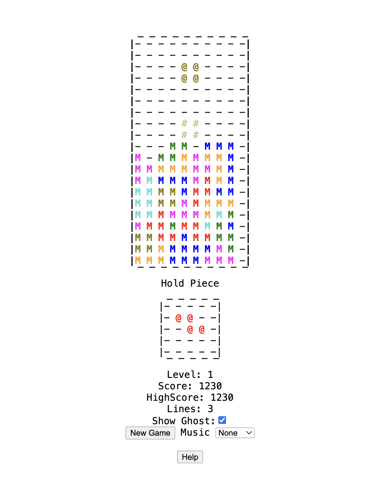
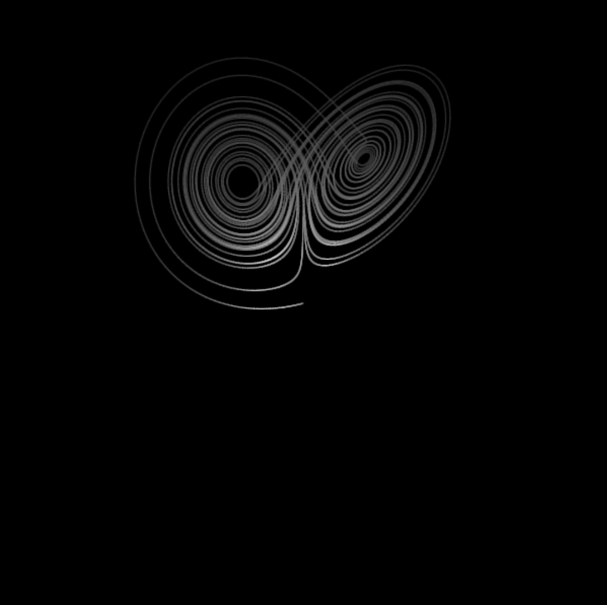
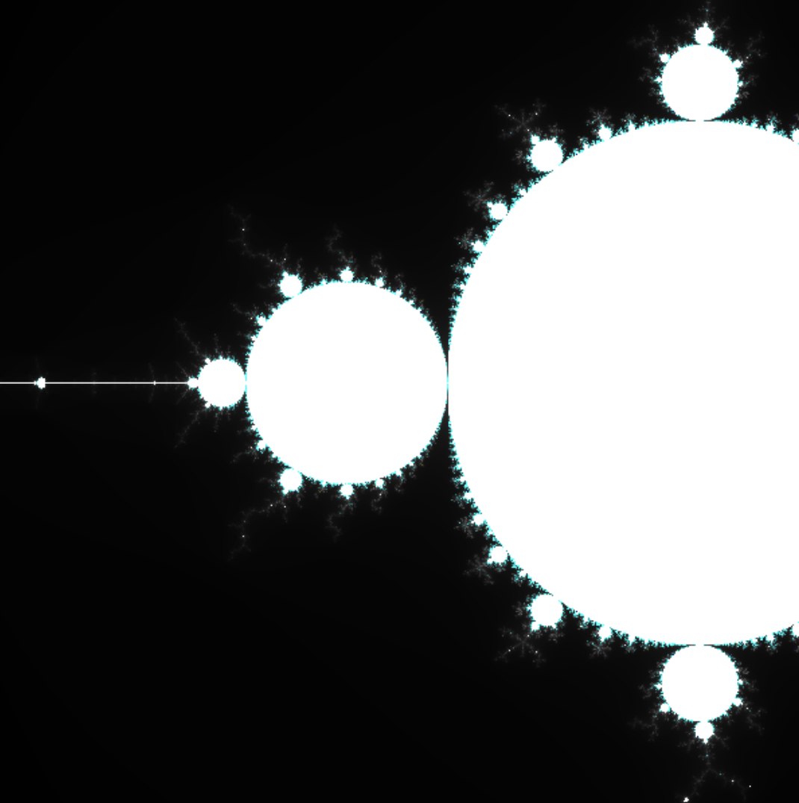
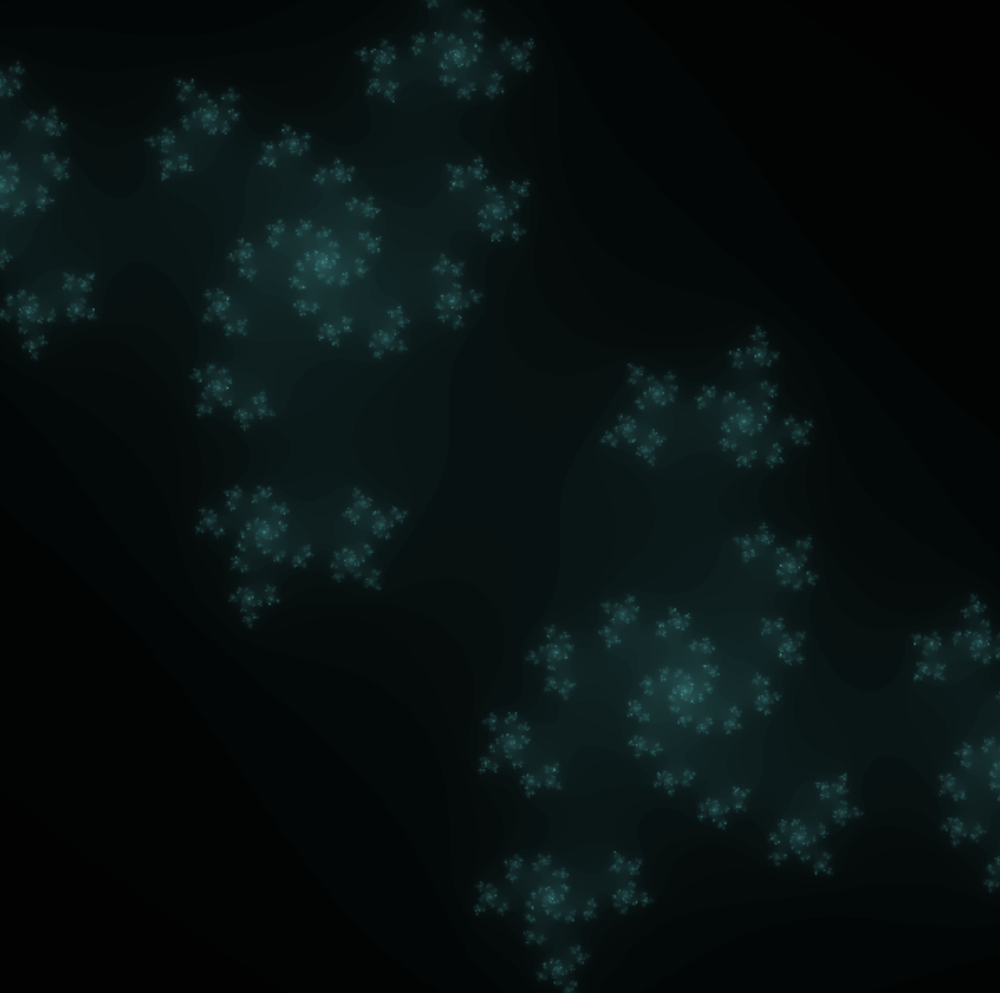
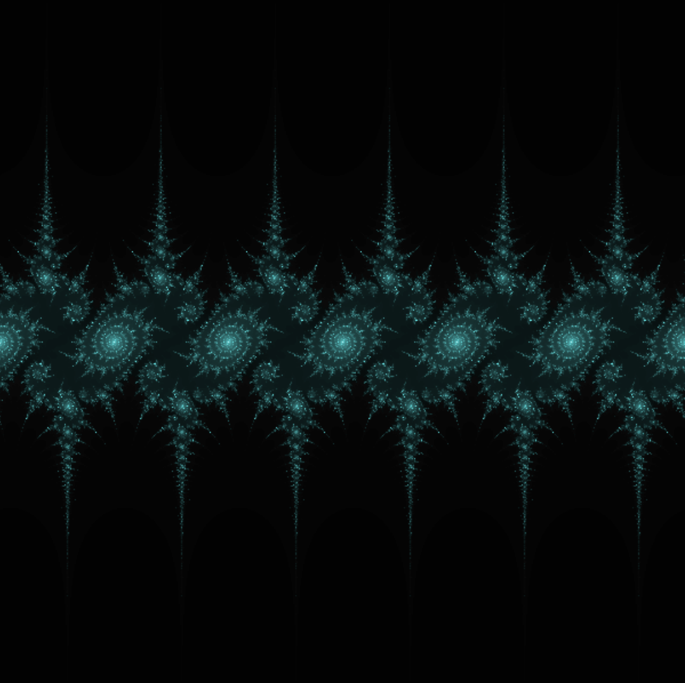
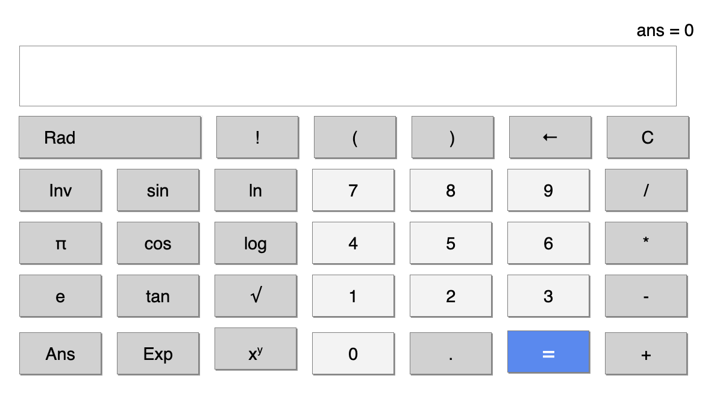

Mwayi Kashoko

ASCII Tetris
: Another clone of the game Tetris but this time using ASCII.

Lorenz System
: A mathematical model of a set of equations. A small change in the variables can cause a drastic change in the model.

Mandelbrot Set
: A fractal based on complex numbers that retains the same shape after significant zooming.

Julia Set
: Like the Mandelbrot set, it is also a self-similar fractal, but it allows for a variable change in the equation.

Sine Julia Sets
: Similar to the Mandelbrot and Julia Sets, but this time it involves sine in the equation.

Calculator
: A simple scientific calculator designed for quick calculations.
Please rotate your device to landscape mode for the best experience.